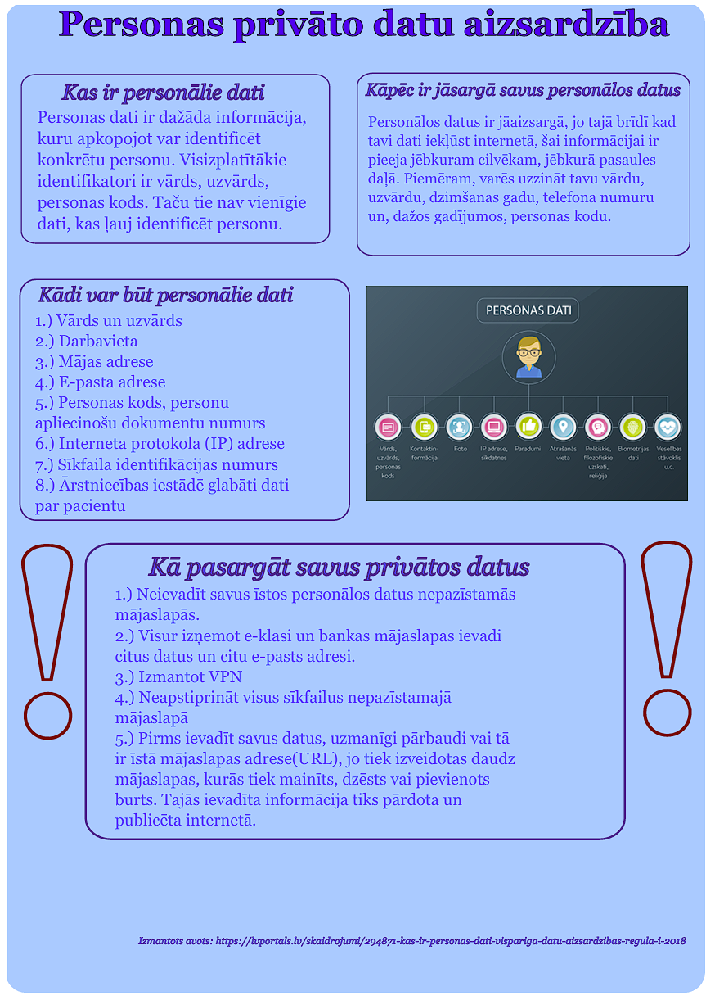
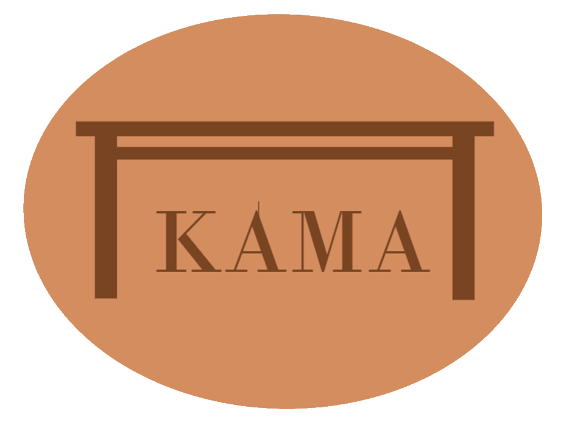
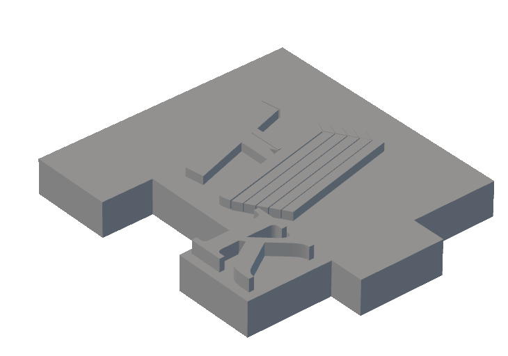

Rekur tiešāks saraksts par padarītiem darbiem šogad:
- Rastrgrafika
- GIMP
- Vektorgrafika
- Inkscape
- Grupu darbs
- Biznesa logo
- Suvenīra detaļas 3D modelis
- Video par projekta tapšanu
- Microsoft programmas
- Word
- Excel

Šis mācību gads man devās visgrūtāk no visiem, jo mēs, lai gan gājām cauri jau mums pazīstamām programmām un tēmām, prasības un zināšanas, kuras no prasīja, bija augstākā līmenī salīdzinājumā ar iepriekšējiem mācību gadiem. Mācību gads sākās ar radošumu, izmantojot savas rastrgrafikas un vektorgrafikas spējas programmās GIMP un Inkscape. Savukārt otrais semestris bija vērsts uz zināšanu atsvaidzināšanu un papildināšanu Microsoft programmās Word un Excel.
Tik padziļināti ar šo jomu es iepazinos pirmo reizi. Visu dzīvi es biju lietojis Adobe Illustrator, Paint vai Inkscape, lai izveidotu kādu bildi. Lai rediģētu fotografiju pa pikseļiem vajadzēja zināt teoriju un labi pārzināt mūsu programmas GIMP rīkus. Tā kā viens no maniem vecākiem ir cieši saistīts ar šo grafikas veidu, gatavojoties mājās pārbaudes darbam vai rediģējot kādu darbu, man vienmēr bija blakus asistents. Zemāk redzamie darbi bija tie, kurus mums prasīja uztaisīt ieskaites laikā. Vajadzēja personalizētā stilā uzrakstīt savu vārdu, kā arī pamēģināt atkārtot dažus darbus no vietnes, kur varēja dabūt iedvesmu. Tajā skaitā vajadzēja būt spējīgam izveidot īsu un primitīvu GIF animāciju.
|  |
Vektorgrafika |
Šī bija jau mana stiprā puse. Es esmu vispār perfekcionists, tāpēc man patīk darboties ar tiešiem zīmējumiem, skaitļiem un līknēm. Parasti šī tēma man nesagādāja lielas problēmas darba izpildē. Lai veiktu prasīto vektorgrafikā mēs izmantojām programmu Inkscape, jo tā bija visiem pazīstama, ne tik grūta kā Adobe Photoshop, bet tajā pašā laikā iespējas ar to ir daudz vairāk nekā ar Paint. Vektorgrafiku mēs pielietojām veidojot plakātu par pašizvēlēto tēmu un, lai izveidotu logo komandas biznesam. Blakus ir plakāts, nākamā sadaļā atradīsies iepriekš minētais logo. |
Tas gan bija kaut kas jauns. Zinot manas intereses un turpmākos plānus dzīvē, es tiešām biju ieinteresēts šajā projektā, jo pašam izstrādāt savu biznesu, veidojot produktu, kas varētu noderēt vai vienkārši izskatīties omulīgi mājas plauktā. Darba uzdevums bija uztaisīt biznesu, kura kaut ko ražos vai sniegs kaut kādus pakalpojumus patērētajiem. Šiem patērētājiem vajadzēja izstrādāt suvenīru ar mūsu uzņēmuma logo un un iniciāļiem (otrais nosacījums bija tikai mums, saistībā ar to, kā ir tapis mūsu uzņēmuma logo). Pēc kopīgās "prāta vētras" un piedāvājumu iesniegšanas, mēs izvēlējāmies Andreja loga. Uz katras detaļas atradās mūsu ikoniskais galds un viens no uzņēmuma dibinātāju vārdu iniciāļiem.
Turpmāk mēs darbojāmies ar suvenīra dizaina izstrādāšanu, lai tas būtu patīkams gan taustes ziņā, gan izskata. Ar 3D es nodarbojos jau dažus gadus, tāpēc uzdevums man likās bērnišķīgi viegls, jo manā 3D modelēšanas pieredzē es biju darbojies ar lielākiem izaicinājumiem. Šeit jūs varat redzēt manu detaļu, kura bija daļa no gala produkta:
|  |  |
Beigās mums vajadzēja izveidot īsu video ar tapšanas procesu. Pagātnē es rediģēju video bieži. Parastās prasmes kā, piemēram, video apgriešana, video saplūdināšana, mūzikas, pāreju un efektu pievienošana - tas bija stundas darbs. Vienīgais radās problēmas ar mūzikas pievienošanu, jo nekur nevarēja bezmaksas lejuplādēt kādu melodiju vai dziesmu, lai video nebūtu drūms un garlaicīgs. Tas, principā, bija noslēguma darbs 1.semestrī.
Pirms daudziem gadiem, kad man bija pirmās mācību stundas informātikā, man vajadzēja pievienot tekstu no dažādām saitēm, mainīt fontus un teksta krāsas. Excel programmā vajadzēja ierakstīt tekstu, mainīt šūnu krāsu un izmērus. Šobrīd ar manām pašreizējām zināšanām, man šķiet, es varētu meklēt grāmatvedības vakances, jo tas zināšanu apjoms, ko mums iedeva skola, ir noteikti pietiekams. Pašlaik es varu rediģēt tekstu un Word dokumentu pēc jebkurām prasībām, spēju veidt daudzas dokumenta kopijas ar dažām izmaiņām "dažos klikšķos". Excel es varu izmantot, lai taisītu apjomīgus un pārskatāmus grafikus, varu uzrakstīt grūtas aprēķināšanas formulas, izmantojot iebūvētos rīkus un funkcijas.